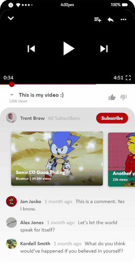
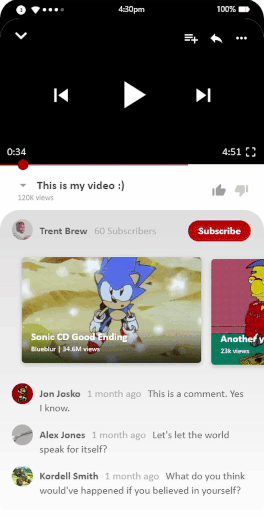

Creative Process
For this project I used Adobe XD in order to experiment with different opportunities for expressive motion. Some of the most mundane tasks such as switching between activities and even scrolling deserve to showcase what makes the app experience special in the form of expressive motion through animations. Adobe XD is perfect for easily experimenting with expressive micro interactivity.

 

Results
My goal for this project was to try and design an experience for YouTube that could fit within a 3 inch screen. Considering that the Palm Phone as well as other credit card sized devices are becoming more popular, I believe that popular apps deserve to have versions that are specifically tailored for these devices. In this case, I tried to keep a consistent card overlay for every activity, as well as gradients to separate content as opposed to line breaks. Attempting to squeeze an information-packed UI like YouTube into the size of a credit card was an interesting design challenge, and forced me to be more intentional about how I use the space. Much like logo design, working with a smaller canvas may be the key to breathing new life into a product that struggles to feel fun to use even on larger displays.